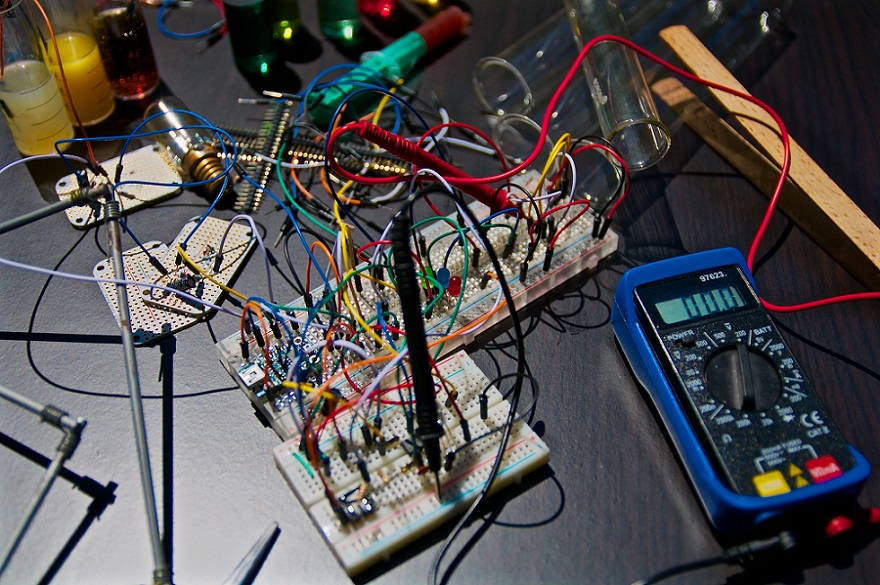

Program Sarjana
Program Sarjana merupakan program pendidikan akademik yang bertujuan menyiapkan mahasiswa menjadi warga negara yang beriman dan bertaqwa kepada Tuhan Yang Maha Esa, berjiwa Pancasila, memiliki integritas kepribadian yang tinggi, terbuka dan tanggap terhadap perubahan dan kemajuan ilmu pengetahuan, dan masalah yang dihadapi masyarakat. Program Sarjana diarahkan pada hasil lulusan yang memiliki kualifikasi sebagai berikut:
- Menguasai dasar-dasar ilmiah dan keterampilan dalam bidang keahlian tertentu, sehingga mampu menemukan, memahami, menjelaskan, dan merumuskan cara penyelesaian masalah yang ada di dalam kawasan keahliannya.
- Mampu menerapkan ilmu pengetahuan dan keterampilan yang dimilikinya sesuai dengan bidang keahliannya dalam kegiatan produktif dan pelayanan kepada masyarakat dengan sikap dan perilaku yang sesuai dengan tata kehidupan bersama.
- Mampu bersikap dan berperilaku dalam membawakan diri, berkarya di bidang keahliannya maupun dalam berkehidupan bersama di masyarakat.
- Mampu mengikuti perkembangan ilmu pengetahuan,teknologi dan/atau seni yang merupakan keahliannya.
Informatika
Tahun 2021 menjadi Program Studi Teknik Informatika unggulan Dunia dalam Bidang Teknologi Informasi dan Komunikasi yang berbasis entrepreneurship. Berdasarkan peringkat Webometrics Juli 2011, Universitas AMIKOM Yogyakarta berada pada peringkat 2168 dunia, di Asia Tenggara berada pada peringkat 79 dari seluruh Perguruan Tinggi di Asia Tenggara. Untuk College (Sekolah Tinggi, Politeknik, Akademi), AMIKOM Yogyakarta berada pada peringkat 2 dari seluruh College di Asia Tenggara. Saat ini AMIKOM Yogyakarta sebagai Perguruan Tinggi Percontohan Dunia Model Private Entrepreneur oleh UNESCO sejak 2009.
Sistem Informasi
Tahun 2021 menjadi Program Studi Sistem Informasi Kelas Dunia yang Unggul dalam Bidang Teknologi Informasi dan Komunikasi yang berbasis entrepreneurship.
Geografi
Menjadikan program studi geografi yang mewujudkan dan mengembangkan ilmu geografi berbasis Sistem Informasi Geografis di bidang ekonomi kreatif yang berwawasan enterpreneurship dalam rangka mendorong pembangunan berkelanjutan tahun 2025
Ilmu Komunikasi
Menjadikan Program Studi Ilmu Komunikasi Universitas Amikom Yogyakarta sebagai rujukan pengembangan ilmu dan praktik dalam bidang visual design, marketing communication, broadcasting, dan cinema di Indonesia pada tahun 2030.
Akuntansi
Visi dan Misi Program Studi Akuntansi Universitas AMIKOM Yogyakarta diturunkan dari visi dan misi universitas. Oleh karena itu sebelum visi dan misi Program Studi Akuntansi diuraikan, akan disampaikan terlebih dahulu visi dan misi universitas.Dengan demikian akan terlihat lebih jelas keterkaitan visi misi universitas dan program studi.
Hubungan Internasional
Menjadi unggul dalam penyelenggaran pendidikan, penelitian dan pengabdian masyarakat dalam disiplin ilmu hubungan internasional dengan kompetensi diplomasi bisnis internasional berbasis sociopreneurship dan keamanan global pada tahun 2031.

Teknik Komputer
Menjadi Prodi Teknik Komputer Unggulan Dunia dalam bidang Cybersecurity dan IoT berbasis Entrepreneurship pada tahun 2030
Teknologi Informasi
MPada tahun 2030 menjadi Program Studi Teknologi Informasi unggulan Dunia dalam Bidang Animasi dan Game yang berbasis Entrepreneurship. Unggulan Dunia berarti program studi secara institusional mempunyai reputasi di tingkat dunia dari sisi prestasi civitas akademika baik dari bidang pengajaran, penelitian maupun pengabdian masyarakat. Berbasis Entrepreneurship berarti lulusan dari Program Studi Teknologi Informasi unggul dalam penguasaan teknologi perangkat keras dan perangkat lunak dan memiliki jiwa kemandirian dalam menciptakan peluang kerja di dunia industri kreatif.